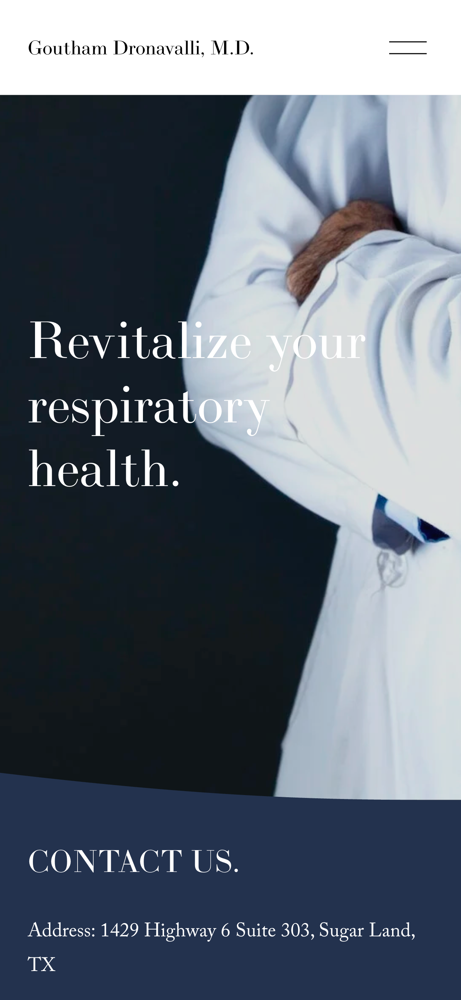

Practice Transformation
Aligning a modern patient experience with the physician behind the practice.
Like many independent practices, Hillcroft Pulmonary had a website that contained the right information but no longer reflected the quality of care patients received.
Dr. Dronavalli's background includes advanced fellowship training at Baylor College of Medicine and academic leadership at UTHealth Houston.
His work has included caring for patients with complex pulmonary disease, including those undergoing lung transplantation.
Much of that story was difficult for prospective patients to discover online.
The objective was simple: create a first impression that better matched the practice.
Physician Background
• 20+ years of clinical experience
• Fellowship training at Baylor College of Medicine
• Associate Professor, UTHealth Houston
• Pulmonary, Critical Care, and Sleep Medicine
• Experience caring for lung transplant patients
• Hospital privileges across Houston
The Transformation
The redesign focused on making Dr. Dronavalli's expertise easier for prospective patients to understand. Clinical experience, specialty training, and appointment pathways were surfaced earlier in the patient journey.
Practice
Hillcroft Pulmonary
Location
Sugar Land, Texas
Project
Website Refresh
Preview Delivery
Days

01
Stronger Physician Credibility
Training, credentials, and clinical expertise are easier to understand.
02
Clearer Appointment Path
Key actions are visible earlier in the patient journey.
03
Mobile-First Experience
Most prospective patients first encounter a practice on a mobile device. The redesigned experience prioritizes readability, navigation, and appointment access.
Previous Website

The Challenge
Three opportunities emerged during the review.
• Fellowship training, academic appointments, and clinical expertise were not prominently featured.
• Appointment requests were not prominent.
• Mobile navigation felt dated.
None affected clinical care. All affected the first impression patients received online.
Evaluate the Direction Before Committing
Most website projects begin with a proposal.
This project began with a working preview.
The practice saw the proposed direction before deciding whether to move forward.
That removed much of the uncertainty typically associated with a website redesign.
Time Required From the Practice
The goal was to minimize the burden on the physician and office staff.
FrontDoor Health
- Design
- Copywriting
- Technical setup
- Mobile optimization
- Launch support
Practice
- One intake conversation
- Preview review
- Provide photos and logo
- Final approval
Estimated physician time: approximately 30 minutes.
Physician Perspective

Dr. Goutham Dronavalli, M.D.
Pulmonary & Critical Care Medicine
“The preview helped me see what was possible before making a decision.
The process required very little time from me or my staff.”
Dr. Goutham Dronavalli, M.D.
Pulmonary Medicine
Key Decisions
Surface Clinical Expertise Earlier
Fellowship training, academic leadership, and pulmonary expertise were moved earlier in the patient journey.
Simplify Appointment Requests
Reduce the number of steps required to contact the practice.
Improve Mobile Readability
Most visitors arrive from mobile devices.
See a practice-specific preview before making a decision.
Preview first. Decide later.
Request Your Free Preview